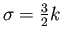

Como se ha visto en la sección anterior, se construye una ``pirámide de respuestas'' con diferentes niveles de escalas dentro de las octavas. La localización de los puntos claves como su escala, se determinan hallando los extremos entre los 8 vecinos en el nivel evaluado y los
vecinos en el nivel inmediatamente superior e inferior mediante la supresión de no-máximos en la vecindad de
. Un esquema puede ser observado en la Fig. 2.9 donde se demarca dicha vecindad.
Figura:
Representación de una octava compuesta por tres niveles de escala ,
, .
|
|
Una vez que el máximo local es identificado, la posición precisa de cada punto clave es obtenida a través de interpolación y el resultado es un conjunto de puntos claves localizados con precisión sub-pÃxel, los cuales están asociados a un valor de escala ().
christian
2014-01-31